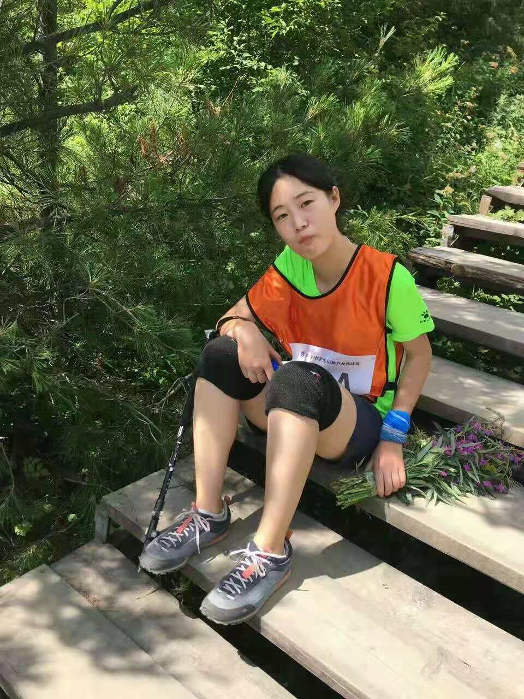

[转寄/推荐][转贴][删除][修改][设置可RE属性][上一篇][返回讨论区][下一篇][回文章][同主题列表][同主题阅读][从这里展开]
发信人: CHOCHO (chivalryCHO), 信区: outdoor
标 题: 【团爆】副会长~第二弹
发信站: 饮水思源 (2018年10月04日12:26:16 星期四)
副会长：薛雅琪
从大一到大三，哪里有一点点，哪里就有薛雅琪。可是不管怎么喝奶茶，从野协小萌妹（
好像没有这个时期？）到野协老阿姨的路上，她一直都是本届妹子的最强者之一（cue一下
刀哥）。那年从十字峡谷回来之后，江湖上就流传了某妹子斥候甩了队伍1小时的传说。
 screen.width - 200){this.width = screen.width - 200}">
|
[转寄/推荐][转贴][删除][修改][设置可RE属性][上一篇][返回讨论区][下一篇][回文章][同主题列表][同主题阅读][从这里展开]